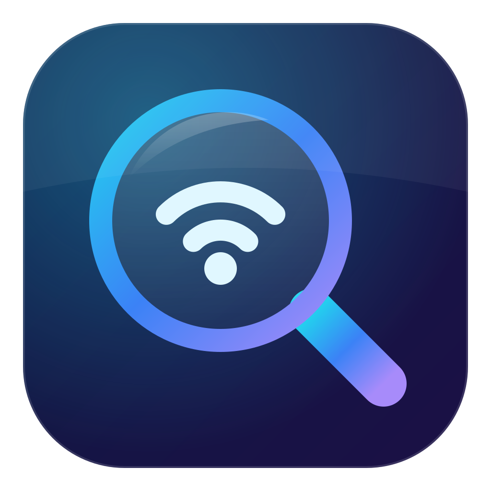
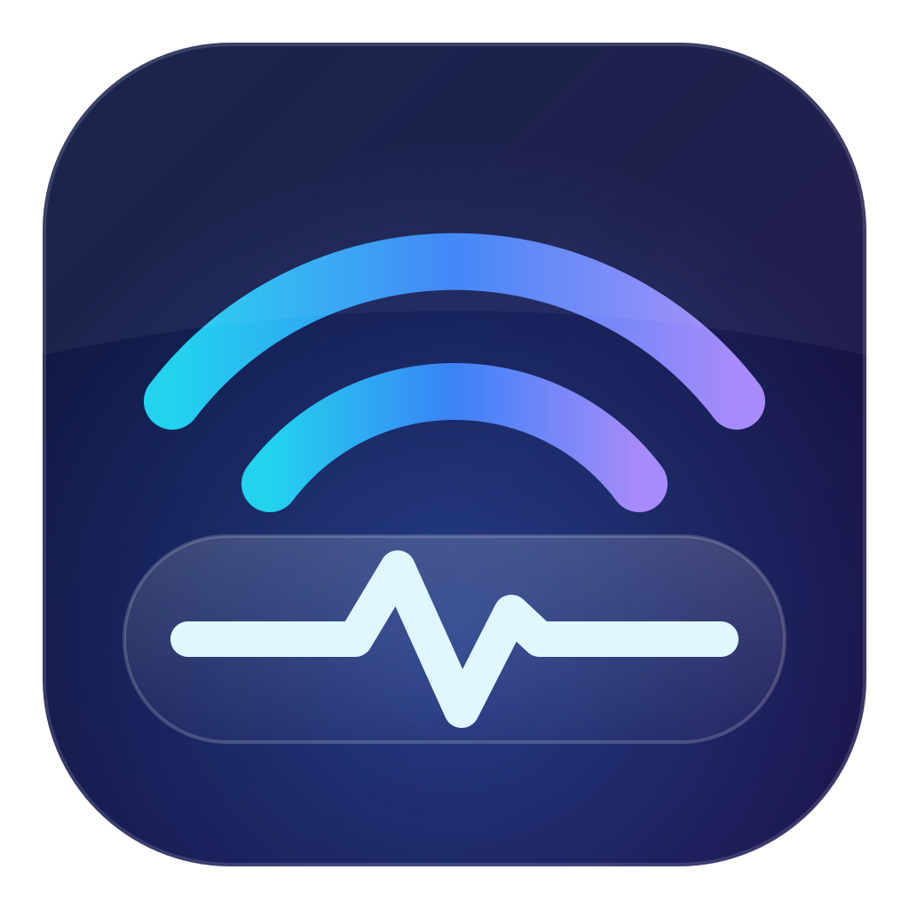

A – Lupa se signálem
Wi-Fi vlny uvnitř skleněné lupy: „hledám problém v síti“.

B – Signál a puls
Signálové oblouky nad skleněným panelem s křivkou pulsu: „měřím tep připojení“.

C – Oko signálu
Oko se skleněnou duhovkou, v ní Wi-Fi symbol: „vidím, co se v síti děje“.